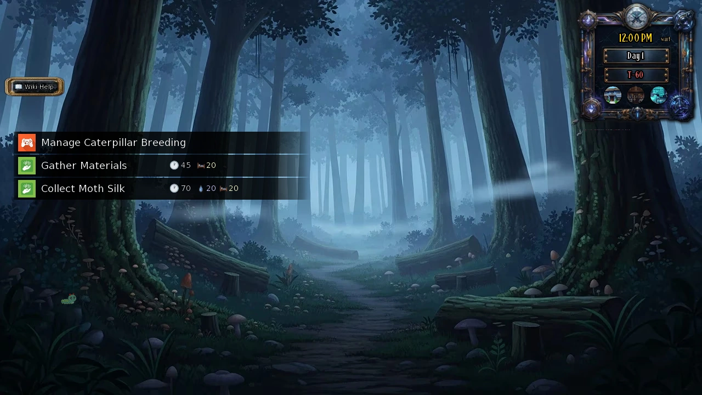
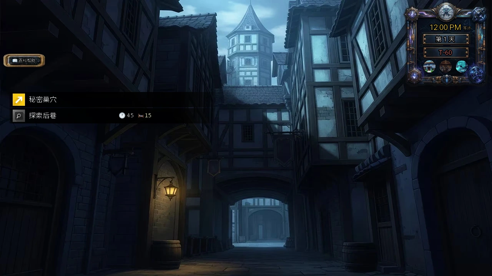
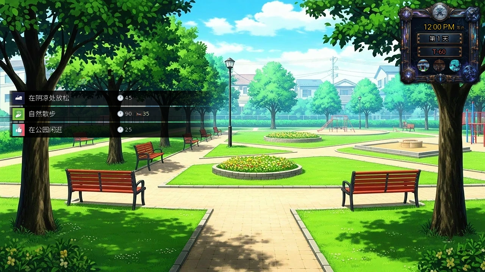

Select a screenshot to enlarge it. Screens show example inventories and progress.
Gathering, searching and small discoveries
For cooking supplies, use Nature Walk or Forage Ingredients. For construction supplies, use Gather Materials. Scavenge mixes three resource types at a higher recovery cost. Hidden scene pickups are a separate activity: select a spot in the scenery instead of choosing a timed gathering action.
Choose a gathering action
The figures below are base minutes / Energy / Calm / Health costs, before applicable reductions. Locations may have their own access requirements. Resources are placed directly into their Common, Rare or Epic stock; gathering does not guarantee a particular rare ingredient or a named quest item.
| Action | Where | Min / Energy / Calm / Health | Base result |
|---|---|---|---|
| Nature Walk | Uptown Park | 90 / 35 / 0 / 0 | Five Ingredients; Perception +1 |
| Forage Ingredients | Royal Hunting Grounds (Edge) Mountain Foothills Whispering Woods Secluded Sanctuary | 75 / 40 / 0 / 0 | Five Ingredients; Perception +1 |
| Gather Materials | Whispering Woods (Uptown) Forest Clearing | 45 / 20 / 0 / 0 | Five Materials |
| Scavenge | Surplus Distribution Center | 75 / 30 / 30 / 15 | 6–18 mixed Materials, Fabrics and Ingredients |
| Collect Moth Silk | Whispering Woods (Uptown) Whispering Woods | 70 / 20 / 20 / 0 | Fabrics based on the combined rearing population |

What changes the yield
Nature Walk and Forage Ingredients guarantee two Common Ingredients, then roll three additional Ingredients at 80% Common / 16% Rare / 4% Epic each. Gather Materials makes five rolls at those same quality odds. Scavenge rolls 6–18 resources: each is equally likely to be Materials, Fabrics or Ingredients, with quality odds 80% / 18% / 2%.
Resource Optimization adds one resource at 70% Common / 25% Rare / 5% Epic. For scavenging, this extra is always a Material. A successful effective-Perception percentage check separately adds one resource: effective Luck decides Epic on success, Rare otherwise. The Perception extra for scavenging has a random type. These bonuses add to the base yield.
All five gathering actions also have an independent 1% chance to raise base Luck by 1. Moth silk uses its own population-based yield; see Caterpillar Rearing for the full production tiers.
Search encounters are not safe gathering
| Action | Location | Base cost |
|---|---|---|
| Explore Back Alleys | Back Alleys | 45 min; 15 Energy |
| Search Cavern | Sirena Isle → Cavern Interior | 45 min; 15 Energy |
The medieval Back Alleys and the modern Downtown alley are different places. Explore Back Alleys can lead to combat, resource loss, characters, teachers or quest progress. A failed attempt does not mean the relevant event is broken. Active Mittens guild searches and Willow’s mushrooms can take priority over ordinary encounters; a complete result is not guaranteed after a fixed number of attempts.
Keep recovery stock before searching. Each alley or cavern search has a separate 2% chance of +1 base Luck. Cavern search selects an enemy encounter 40%, another discovery 40%, or nothing 20%. Its battle outcome can separately remove 5–50 Health, Energy and Calm, leaving at least 1 of each; those losses are additional to the search action. Use the Sirena Isle guide for its cave rewards and access.
For specific alley progress, use Willow · Isolde · Mittens · Rain. Mining and its tools have a separate guide.
Click the scenery for hidden pickups
Hidden spots are part of ordinary location pictures. They do not always have a visible item icon. Click or tap the indicated scenery while that location is open; successful collection displays a message. Collecting these normal pickups does not advance time or spend Energy. Travelling there still takes its normal time.
| Pickup | Number of spots | Repeat rule |
|---|---|---|
| Flowers | 45 | 1–2 Flowers per spot; returns 6 game days after that spot was collected |
| Cash | 42 | One-time per spot |
| Voucher | 6 | One-time per spot |
| Mining pickaxes | 15 at Mountain Foothills | 6 Copper, 6 Iron and 3 Diamond spots; returns after 3 game days |
Respawns use each spot’s own collection day. A flower picked on day 4 returns on day 10; another flower picked on day 5 returns on day 11. Waiting until midnight once does not refill every spot. Seasonal Candy Canes have separate event rules: see Christmas Village.
Optional pickup location reference
Optional exact positions below measure across / down from the top-left of the game picture, not the browser window. “25% / 75%” means one-quarter across and three-quarters down. Select near the centre of the small target; the picture can scale on different screens.
Flower locations
| Location | Per spot | Across / down |
|---|---|---|
| Future · Artificial Nature Preserve | Flowers ×1 | 12.7% / 87.8% 51.8% / 82.3% |
| Future · Artificial Nature Preserve | Flowers ×2 | 83.0% / 85.1% |
| Future · Genetically Enhanced Plant Research Dome | Flowers ×2 | 15.0% / 68.4% 36.1% / 74.0% 65.8% / 74.0% 85.4% / 68.4% |
| Medieval · Ancient Earth Shrine | Flowers ×1 | 71.3% / 87.8% |
| Medieval · Castle Garden | Flowers ×1 | 20.5% / 87.8% 83.4% / 83.7% |
| Medieval · Castle Garden | Flowers ×2 | 28.3% / 68.4% 51.0% / 71.2% 75.2% / 68.4% 71.3% / 85.1% |
| Medieval · Castle Garden | Flowers ×3 | 12.7% / 78.1% 89.3% / 78.1% |
| Medieval · Courtyard | Flowers ×1 | 16.6% / 72.6% 86.9% / 76.7% |
| Medieval · Courtyard | Flowers ×2 | 6.4% / 57.3% 51.0% / 50.3% 79.9% / 53.1% |
| Medieval · Mystic's Meditation Grove | Flowers ×1 | 8.8% / 85.1% 93.2% / 87.8% |
| Medieval · Royal Hunting Grounds (Edge) | Flowers ×1 | 28.3% / 82.3% |
| Medieval · Rural Farm | Flowers ×1 | 7.2% / 92.0% |
| Medieval · Secluded Sanctuary | Flowers ×1 | 8.8% / 90.6% 92.4% / 90.6% |
| Medieval · Village Healer's Hut | Flowers ×1 | 93.2% / 82.3% |
| Present · Downtown Park | Flowers ×1 | 76.0% / 87.8% 42.4% / 76.7% |
| Present · Downtown Park | Flowers ×2 | 22.9% / 87.8% 59.6% / 77.4% |
| Present · Farmers Market | Flowers ×1 | 4.9% / 78.1% |
| Present · Hidden Waterfall | Flowers ×1 | 10.4% / 92.0% 22.9% / 85.1% 86.9% / 92.0% |
| Present · Local Café | Flowers ×1 | 13.5% / 75.3% 86.9% / 80.9% |
| Present · Mountain Foothills (Uptown) | Flowers ×1 | 86.9% / 87.8% 94.7% / 82.3% |
| Present · Uptown Park | Flowers ×1 | 46.3% / 60.1% 62.7% / 53.1% 14.3% / 90.6% 54.5% / 60.1% |
| Present · Whispering Woods (Uptown) | Flowers ×1 | 16.6% / 90.6% |
One-time cash locations
| Location | Per spot | Across / down |
|---|---|---|
| Future · Glitch's Den | Cash ×115 | 40.4% / 85.8% |
| Future · Hyperloop Transit Nexus | Cash ×60 | 24.8% / 78.8% |
| Future · Industrial Waste Processing Zone | Cash ×95 | 32.6% / 85.8% |
| Future · Multi-Level Automated Parking Complex | Cash ×80 | 51.4% / 94.1% |
| Future · Neural Club | Cash ×100 | 87.3% / 81.6% |
| Future · Resistance Hideout | Cash ×130 | 20.9% / 80.2% |
| Future · Surplus Distribution Center | Cash ×70 | 67.8% / 84.4% |
| Future · Synergy Corp Corporate Tower | Cash ×140 | 75.6% / 78.8% |
| Future · Unregistered Housing Complex | Cash ×75 | 9.2% / 74.7% |
| Future · VOID Central Command Headquarters | Cash ×150 | 17.0% / 83.0% |
| Medieval · Back Alleys | Cash ×85 | 13.9% / 84.4% |
| Medieval · Bandit Hideout | Cash ×120 | 63.9% / 77.4% |
| Medieval · Barn Interior | Cash ×80 | 23.2% / 76.0% |
| Medieval · Black Market | Cash ×130 | 83.4% / 84.4% |
| Medieval · Blacksmith Shop | Cash ×75 | 28.7% / 80.2% |
| Medieval · Caravan Rest Stop | Cash ×90 | 17.0% / 83.0% |
| Medieval · Grand Ballroom | Cash ×110 | 83.4% / 85.8% |
| Medieval · Monastery Scriptoria | Cash ×55 | 51.4% / 78.8% |
| Medieval · Peasant Huts | Cash ×50 | 28.7% / 91.3% |
| Medieval · Rowdy Alehouse | Cash ×65 | 71.7% / 88.5% |
| Medieval · Thieves Guild | Cash ×150 | 8.8% / 63.5% |
| Medieval · Throne Room | Cash ×140 | 11.5% / 83.0% |
| Medieval · Traveler's Inn Tavern | Cash ×70 | 43.6% / 80.2% |
| Medieval · Underground Catacombs | Cash ×100 | 38.9% / 88.5% |
| Medieval · Village Market | Cash ×60 | 51.4% / 88.5% |
| Present · Back Alley | Cash ×75 | 13.5% / 79.5% |
| Present · Basement | Cash ×70 | 87.3% / 76.0% |
| Present · City Beach (Uptown) | Cash ×110 | 60.0% / 88.5% |
| Present · City Gym (Uptown) | Cash ×80 | 10.7% / 83.0% |
| Present · City Library (Uptown) | Cash ×100 | 8.0% / 57.3% |
| Present · City Street (Downtown) | Cash ×55 | 51.4% / 91.3% |
| Present · Corner Convenience Store | Cash ×50 | 69.3% / 83.0% |
| Present · Dojo | Cash ×75 | 87.3% / 78.8% |
| Present · Downtown Bar | Cash ×60 | 31.1% / 85.8% |
| Present · Downtown Restaurant | Cash ×90 | 50.6% / 77.4% |
| Present · Food Court (Mall) | Cash ×65 | 38.9% / 85.8% |
| Present · Living Room | Cash ×150 | 72.9% / 47.6% 62.5% / 46.9% |
| Present · Metro Station (Uptown) | Cash ×50 | 17.0% / 71.9% |
| Present · Night Club | Cash ×120 | 46.7% / 94.8% |
| Present · Retro Arcade | Cash ×50 | 91.2% / 74.7% |
| Present · Spa | Cash ×85 | 25.6% / 64.2% |
Voucher locations
| Location | Per spot | Across / down |
|---|---|---|
| Future · Hyperloop Transit Nexus | Voucher ×1 | 77.1% / 47.6% |
| Future · Surplus Distribution Center | Voucher ×1 | 75.4% / 56.0% |
| Medieval · Hidden Chamber | Voucher ×1 | 68.1% / 64.8% |
| Present · Clothing Store (Mall) | Voucher ×1 | 59.7% / 45.8% |
| Present · Metro Station (Downtown) | Voucher ×1 | 90.7% / 64.4% |
| Present · Retro Arcade | Voucher ×1 | 66.2% / 53.1% |
Respawning pickaxe locations
| Location | Per spot | Across / down |
|---|---|---|
| Medieval · Mountain Foothills | Copper Pickaxe ×1 | 73.2% / 92.0% 44.7% / 97.6% 98.6% / 43.4% 7.2% / 79.5% 31.1% / 73.3% 86.5% / 78.1% |
| Medieval · Mountain Foothills | Diamond Pickaxe ×1 | 93.6% / 97.6% 26.4% / 58.7% 97.9% / 59.4% |
| Medieval · Mountain Foothills | Iron Pickaxe ×1 | 83.4% / 66.3% 55.3% / 97.6% 17.0% / 97.6% 69.3% / 52.4% 37.3% / 87.8% 70.1% / 44.8% |
Spend and replenish deliberately
Ingredients are cooking stock, Materials are construction stock and Fabrics are another separate stock. A higher-tier resource does not automatically replace a lower-tier cost. Check Items and Cooking before converting Ingredients into Food, and compare prices in Wealth and Work when deciding whether to gather or buy.
For a missing action, check the correct era, exact location and access conditions. For a missing hidden pickup, check whether it was already collected and whether its own respawn day has arrived. Quest discoveries also need their specific active prerequisites; gathering ordinary stock does not substitute for those steps.
采集、搜索与场景小发现
缺食材时，选「自然散步」或「采集食材」；缺建造材料时，选「采集材料」。「搜刮」能取得三类资源，但恢复成本更高。场景中的隐藏拾取点则是另一种玩法：直接点击背景中的位置，不是选择耗时的采集行动。
按需要选择采集行动
下表消耗依次为基础分钟数／精力／镇定／生命，尚未计入适用减免。地点本身仍有进入条件。收获直接加入普通、稀有或史诗资源库存；一次采集并不保证取得某种稀有资源，也不保证取得具名任务物品。
| 行动 | 地点 | 分钟／精力／镇定／生命 | 基础收获 |
|---|---|---|---|
| 自然散步 | 上城公园 | 90 / 35 / 0 / 0 | 5份食材；感知+1 |
| 采集食材 | 皇家狩猎场（边缘） 山脚 低语森林 隐秘圣所 | 75 / 40 / 0 / 0 | 5份食材；感知+1 |
| 采集材料 | 低语森林（上城区） 林中空地 | 45 / 20 / 0 / 0 | 5份材料 |
| 搜刮 | 剩余物资分配中心 | 75 / 30 / 30 / 15 | 6–18份材料、布料与食材，种类随机 |
| 采集蛾丝 | 低语森林（上城区） 低语森林 | 70 / 20 / 20 / 0 | 按两地饲养总量获得布料 |
哪些因素会改变收获
「自然散步」与「采集食材」先固定获得2份普通食材，再分别判定另外3份：每份有80%概率为普通、16%为稀有、4%为史诗。「采集材料」按相同比例判定5份材料。「搜刮」先决定6–18份收获，每份等概率属于材料、布料或食材，品质比例为80%／18%／2%。
「资源优化」额外增加1份资源，品质比例为普通70%、稀有25%、史诗5%；在「搜刮」中，这一份固定是材料。另有一次按有效感知判定的额外收获：成功后再按有效幸运判定，成功给史诗，否则给稀有；搜刮的这份额外资源种类随机。这些奖励都加在基础收获之外。
上述五种采集行动，还各有独立1%概率使基础幸运+1。蛾丝使用独立的种群产量规则，完整档位见毛虫繁育。
搜索可能遇到遭遇事件
| 行动 | 地点 | 基础消耗 |
|---|---|---|
| 探索后巷 | 后巷 | 45分钟；15精力 |
| 搜索洞窟 | 塞壬岛洞穴内部 | 45分钟；15精力 |
中世纪的后巷与现代市中心的后巷不是同一地点。「探索后巷」可能遇到战斗、资源损失、人物、教师或任务事件；一次没有遇到目标，并不代表任务失效。Mittens的公会搜索任务与Willow的蘑菇可能优先出现，不能保证尝试固定次数就一定完成。
搜索前留好恢复物品。后巷和洞窟搜索各有独立2%概率使基础幸运+1。洞窟搜索有40%概率遇敌、40%遇到其他发现、20%没有发现；战斗结果可能分别扣除5–50生命、精力与镇定，各项最低留1。这些损失在搜索行动消耗之外。洞窟奖励与进入条件见塞壬岛度假村指南。
后巷具体路线可查Willow、Isolde、Mittens与Rain。采矿与镐的使用另见采矿指南。

直接点击背景寻找隐藏物品
隐藏拾取点位于普通地点背景中，不一定显示独立物品图标。进入对应地点后，点击或轻触指定区域；成功拾取会出现提示。这类普通拾取本身不推进时间，也不消耗精力；前往地点的旅行仍按正常规则耗时。
| 拾取内容 | 点位数量 | 重复获取规则 |
|---|---|---|
| 鲜花 | 45处 | 每处1–2份；该处拾取后第6个游戏日恢复 |
| 财富 | 42处 | 每处仅一次 |
| 兑换券 | 6处 | 每处仅一次 |
| 采矿镐 | 山脚共15处 | 铜镐6处、铁镐6处、钻石镐3处；拾取后第3个游戏日恢复 |
每个点位单独计时。例如第4天摘的花，第10天恢复；第5天摘的另一处，第11天恢复。过一次午夜，并不会让所有点位一起刷新。节庆拐杖糖使用独立规则，见圣诞村。

可选：隐藏拾取点位表
下方可选点位表从游戏画面左上角量起，依次为横向／纵向位置，不含浏览器边框。「25%／75%」表示从左数四分之一、从上数四分之三。点击小区域中心附近即可；不同设备上画面可能等比例缩放。
鲜花点位
| 地点 | 每处收获 | 横向／纵向 |
|---|---|---|
| 中世纪 · 乡村农场 | 鲜花 ×1 | 7.2% / 92.0% |
| 中世纪 · 修行者冥想林 | 鲜花 ×1 | 8.8% / 85.1% 93.2% / 87.8% |
| 中世纪 · 城堡花园 | 鲜花 ×1 | 20.5% / 87.8% 83.4% / 83.7% |
| 中世纪 · 城堡花园 | 鲜花 ×2 | 28.3% / 68.4% 51.0% / 71.2% 75.2% / 68.4% 71.3% / 85.1% |
| 中世纪 · 城堡花园 | 鲜花 ×3 | 12.7% / 78.1% 89.3% / 78.1% |
| 中世纪 · 庭院 | 鲜花 ×1 | 16.6% / 72.6% 86.9% / 76.7% |
| 中世纪 · 庭院 | 鲜花 ×2 | 6.4% / 57.3% 51.0% / 50.3% 79.9% / 53.1% |
| 中世纪 · 村庄治疗师小屋 | 鲜花 ×1 | 93.2% / 82.3% |
| 中世纪 · 皇家狩猎场（边缘） | 鲜花 ×1 | 28.3% / 82.3% |
| 中世纪 · 远古大地神殿 | 鲜花 ×1 | 71.3% / 87.8% |
| 中世纪 · 隐秘圣所 | 鲜花 ×1 | 8.8% / 90.6% 92.4% / 90.6% |
| 未来 · 人工自然保护区 | 鲜花 ×1 | 12.7% / 87.8% 51.8% / 82.3% |
| 未来 · 人工自然保护区 | 鲜花 ×2 | 83.0% / 85.1% |
| 未来 · 基因强化植物研究穹顶 | 鲜花 ×2 | 15.0% / 68.4% 36.1% / 74.0% 65.8% / 74.0% 85.4% / 68.4% |
| 现代 · 上城公园 | 鲜花 ×1 | 46.3% / 60.1% 62.7% / 53.1% 14.3% / 90.6% 54.5% / 60.1% |
| 现代 · 低语森林（上城区） | 鲜花 ×1 | 16.6% / 90.6% |
| 现代 · 农贸市场 | 鲜花 ×1 | 4.9% / 78.1% |
| 现代 · 山脚（上城区） | 鲜花 ×1 | 86.9% / 87.8% 94.7% / 82.3% |
| 现代 · 市中心公园 | 鲜花 ×1 | 76.0% / 87.8% 42.4% / 76.7% |
| 现代 · 市中心公园 | 鲜花 ×2 | 22.9% / 87.8% 59.6% / 77.4% |
| 现代 · 本地咖啡馆 | 鲜花 ×1 | 13.5% / 75.3% 86.9% / 80.9% |
| 现代 · 隐藏瀑布 | 鲜花 ×1 | 10.4% / 92.0% 22.9% / 85.1% 86.9% / 92.0% |
一次性财富点位
| 地点 | 每处收获 | 横向／纵向 |
|---|---|---|
| 中世纪 · 修道院抄写室 | 财富 ×55 | 51.4% / 78.8% |
| 中世纪 · 农民小屋 | 财富 ×50 | 28.7% / 91.3% |
| 中世纪 · 后巷 | 财富 ×85 | 13.9% / 84.4% |
| 中世纪 · 商队休息站 | 财富 ×90 | 17.0% / 83.0% |
| 中世纪 · 喧闹酒馆 | 财富 ×65 | 71.7% / 88.5% |
| 中世纪 · 地下墓穴 | 财富 ×100 | 38.9% / 88.5% |
| 中世纪 · 大舞厅 | 财富 ×110 | 83.4% / 85.8% |
| 中世纪 · 强盗藏身处 | 财富 ×120 | 63.9% / 77.4% |
| 中世纪 · 旅人旅店酒馆 | 财富 ×70 | 43.6% / 80.2% |
| 中世纪 · 村庄市场 | 财富 ×60 | 51.4% / 88.5% |
| 中世纪 · 王座厅 | 财富 ×140 | 11.5% / 83.0% |
| 中世纪 · 盗贼公会 | 财富 ×150 | 8.8% / 63.5% |
| 中世纪 · 谷仓内部 | 财富 ×80 | 23.2% / 76.0% |
| 中世纪 · 铁匠铺 | 财富 ×75 | 28.7% / 80.2% |
| 中世纪 · 黑市 | 财富 ×130 | 83.4% / 84.4% |
| 未来 · Glitch的藏身处 | 财富 ×115 | 40.4% / 85.8% |
| 未来 · VOID中央指挥总部 | 财富 ×150 | 17.0% / 83.0% |
| 未来 · 剩余物资分配中心 | 财富 ×70 | 67.8% / 84.4% |
| 未来 · 反抗军藏身处 | 财富 ×130 | 20.9% / 80.2% |
| 未来 · 多层自动停车楼 | 财富 ×80 | 51.4% / 94.1% |
| 未来 · 工业废料处理区 | 财富 ×95 | 32.6% / 85.8% |
| 未来 · 新能集公司企业塔 | 财富 ×140 | 75.6% / 78.8% |
| 未来 · 未注册住宅区 | 财富 ×75 | 9.2% / 74.7% |
| 未来 · 神经俱乐部 | 财富 ×100 | 87.3% / 81.6% |
| 未来 · 超环交通枢纽 | 财富 ×60 | 24.8% / 78.8% |
| 现代 · 后巷 | 财富 ×75 | 13.5% / 79.5% |
| 现代 · 地下室 | 财富 ×70 | 87.3% / 76.0% |
| 现代 · 地铁站（上城区） | 财富 ×50 | 17.0% / 71.9% |
| 现代 · 城市健身房（上城区） | 财富 ×80 | 10.7% / 83.0% |
| 现代 · 城市图书馆（上城区） | 财富 ×100 | 8.0% / 57.3% |
| 现代 · 城市海滩（上城区） | 财富 ×110 | 60.0% / 88.5% |
| 现代 · 城市街道（市中心） | 财富 ×55 | 51.4% / 91.3% |
| 现代 · 复古游戏厅 | 财富 ×50 | 91.2% / 74.7% |
| 现代 · 夜店 | 财富 ×120 | 46.7% / 94.8% |
| 现代 · 客厅 | 财富 ×150 | 72.9% / 47.6% 62.5% / 46.9% |
| 现代 · 市中心酒吧 | 财富 ×60 | 31.1% / 85.8% |
| 现代 · 市中心餐厅 | 财富 ×90 | 50.6% / 77.4% |
| 现代 · 水疗馆 | 财富 ×85 | 25.6% / 64.2% |
| 现代 · 美食广场（商场） | 财富 ×65 | 38.9% / 85.8% |
| 现代 · 街角便利店 | 财富 ×50 | 69.3% / 83.0% |
| 现代 · 道场 | 财富 ×75 | 87.3% / 78.8% |
兑换券点位
| 地点 | 每处收获 | 横向／纵向 |
|---|---|---|
| 中世纪 · 隐藏密室 | 兑换券 ×1 | 68.1% / 64.8% |
| 未来 · 剩余物资分配中心 | 兑换券 ×1 | 75.4% / 56.0% |
| 未来 · 超环交通枢纽 | 兑换券 ×1 | 77.1% / 47.6% |
| 现代 · 地铁站（市中心） | 兑换券 ×1 | 90.7% / 64.4% |
| 现代 · 复古游戏厅 | 兑换券 ×1 | 66.2% / 53.1% |
| 现代 · 服装店（商场） | 兑换券 ×1 | 59.7% / 45.8% |
可刷新的采矿镐点位
| 地点 | 每处收获 | 横向／纵向 |
|---|---|---|
| 中世纪 · 山脚 | 钻石镐 ×1 | 93.6% / 97.6% 26.4% / 58.7% 97.9% / 59.4% |
| 中世纪 · 山脚 | 铁镐 ×1 | 83.4% / 66.3% 55.3% / 97.6% 17.0% / 97.6% 69.3% / 52.4% 37.3% / 87.8% 70.1% / 44.8% |
| 中世纪 · 山脚 | 铜镐 ×1 | 73.2% / 92.0% 44.7% / 97.6% 98.6% / 43.4% 7.2% / 79.5% 31.1% / 73.3% 86.5% / 78.1% |
安排消耗与补充
食材供烹饪使用，材料用于建造，布料又是另一类库存。高级资源不能自动代替低级资源支付费用。将食材转成食物前，可先查道具与烹饪；决定采集还是购买时，可参考财富与工作。
行动没有出现时，先核对时代、具体地点与访问条件。隐藏点位没有反应时，检查是否已经取过，以及该处是否到了恢复日。任务发现还需要对应前置；普通资源数量再多，也不能代替具名任务步骤。
CC BY-SA 4.0. Game images © Chronoromancer Studio.